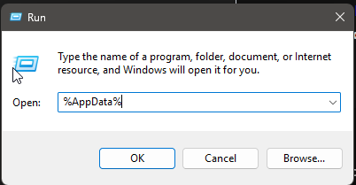
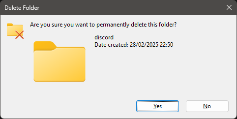
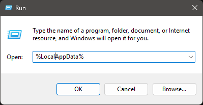

Equicord Documentation
📚 A finished and foolproof guide to installing and using Equicord
👋 Welcome to the Equicord documentation!
This guide will help you get started with installing and using Equicord. Equicord is a Vencord fork that is actively maintained and updated by the Equicord team and Equicord Contributors. You have the ways to install Equicord for the 3 main Operating Systems. (Linux, MacOS and Windows) Windows: Equicord can be installed on Windows using the GUI installer or the CLI installer. The GUI installer is recommended for most users, while the CLI installer is more of a basic option. Equibop can be installed on Windows using the Installer's (X64/AMD64/ARM64/etc) or the Portable zip files. MacOS:
Equicord can be installed on MacOS using the GUI installer. As a Secondary option for Mac there is Equibop.
Equibop can be installed be install via DMG file or ZIP. If you would like more information on Equibop please visit the Equibop Repository.
MacOS:
Equicord can be installed on MacOS using the GUI installer. As a Secondary option for Mac there is Equibop.
Equibop can be installed be install via DMG file or ZIP. If you would like more information on Equibop please visit the Equibop Repository.
 Linux:
Equicord can be installed on Linux using the right installation for your desktop environment. There are several options available, including GUI for X11 and Wayland, CLI, and a shell script installation. You can also install Equicord from the Arch User Repository.
It is recommended to use Equibop if on Linux as it is a stable version of Equicord for Linux using discord web.
Linux:
Equicord can be installed on Linux using the right installation for your desktop environment. There are several options available, including GUI for X11 and Wayland, CLI, and a shell script installation. You can also install Equicord from the Arch User Repository.
It is recommended to use Equibop if on Linux as it is a stable version of Equicord for Linux using discord web.
🛠️ Installing Equicord
This guide will walk you through the installation process for Equicord across various platforms. Choose the appropriate method for your operating system.
Windows
Equicord offers both GUI and CLI installation options for Windows users:
- GUI Installer: Download Equilotl.exe
- CLI Installer: Download EquilotlCli.exe
- Equibop: Download Equibop
MacOS
For MacOS users, we provide a GUI installer & Equibop.
- GUI Installer: Download Equilotl.MacOS.zip
- Equibop (Recommended) DMG, ZIP
Linux
Linux users have several installation options depending on their desktop environment and preferences:
- GUI for X11: Download Equilotl-x11
- GUI for Wayland: Download Equilotl-wayland
- CLI: Download EquilotlCli-Linux
- Arch User Repository: Equicord on AUR
- Equibop: Equibop on AUR
- Equibop on amd64 / x86_64: AppImage, Ubuntu/Debian (.deb), Fedora/RHEL (.rpm), tarball
- Equibop on Flatpak/Flathub: Flathub/Flatpak
- Equibop on Arm®64 / aarch64: AppImage, Ubuntu/Debian (.deb), Fedora/RHEL (.rpm), tarball
- Shell Script Installation:
sh -c "$(curl -sS https://raw.githubusercontent.com/Equicord/Equicord/refs/heads/main/misc/install.sh)"
🏗️ Building from source
Equicord developer build is intended only for plugin development or when adding custom user plugins. We strongly recommend against using it unless you have sufficient technical knowledge.
If you need to build Equicord from source for development purposes, follow these steps:
🧩 Prerequisites
Before starting, ensure you have the following dependencies installed:
🛠️ Install pnpm
Important: For subsequent steps, do NOT use an admin/root terminal. Doing so could damage your Discord/Equicord installation and require a complete reinstall.
Note: The following command may require administrator/root privileges. After installation, you may need to close and reopen your terminal for pnpm to be available in your PATH.
npm i -g pnpm🛠️ Clone the Repository
git clone https://github.com/Equicord/Equicord
cd Equicord🛠️ Install Dependencies
pnpm install --no-frozen-lockfile🛠️ Build Equicord
pnpm buildNote: To enable Developer only plugins inside of Equicord you must build using pnpm build --dev
It is Recommended that you don't use this as some plugins can be deemed danger to public user or used for Equicord Development
💉 Inject Equicord into Discord
pnpm inject🏭/🏗️ Plugin Development
🏭/🏗️ Installing Userplugins
Equicord supports allows any plugin to be build into your Discord.(Includes 3rd-party plugins from Vencord). To install a user plugin, follow these steps:
1. ⏬ Download the Plugin
✅ Correct:
src/userplugins/MyMagicPlugin/MyMagicPlugin.ts src/userplugins/MyMagicPlugin/index.tsx⚠️ Incorrect:
src/userplugins/MyMagicPlugin/MyMagicPlugin/MyMagicPlugin.tsx src/userplugins/index.ts2. 📥 Place Plugin in Userplugins Folder
After downloading, place the plugin file in one of these locations:
- Windows:
Equicord\src\userplugins\ - macOS:
~/Library/Application Support/Equicord/src/userplugins/ - Linux:
~/.config/Equicord/src/userplugins/
3. 🔃 Restart Discord
Restart Discord completely for the plugin to take effect. You can then enable it in Equicord settings.
🏗️🏭 Extras
This documentation currently unfinished. If you would like to contribute to Equicord open PR Here!
1. "My Plugin isn't working!"
Make sure the plugin is in the correct folder and has the correct file structure. If you're still having issues, check the Equicord build logs for more information.
2. Where do I get support about Plugin Development?
For plugin development suggetions/support, You can ask in Equicord Discord. You may not get a reply if the User or Person is not knowledgeable on the topic.
FAQ
IF YOU ARE GOING TO USE AI OR CHATGPT FOR SUPPORT YOU WILL BE SUPPORT BANNED. SUPPORT IS ONLY ON OUR DISCORD
1. "A JavaScript error orrcurred in the main process"
This could be many things to do with Installer or discord's JavaScript files. If your installer is out of date PLEASE UPDATE!
2. "Patching C:\Users\user\AppData\Local\Discord. ERROR Didn't find desktop.asar"
Your Discord install is likely messed up please follow this:
Press Windows+R
%AppData%
Delete Discord
Repeat for %LocalAppData%
Install discord
OR do a clean reinstall using the guide below (its completely different to a normal reinstall) from Here
IF you need a Simpified way then follow this:
Hold Windows Key and Press R, this box under should appear. Type %AppData% and click OK.

Then Delete the Discord Folder.

Repeat the same steps but with %LocalAppData% and delete the Discord Folder.

❕Then Install Discord again. If you want to download discord quickly you can from these 3 buttons.
 Main Branch (Discord)
Main Branch (Discord)
 PTB Branch (Discord PTB)
PTB Branch (Discord PTB)
 Canary Branch(Discord Canary)
Canary Branch(Discord Canary)
3. Something went wrong. Please Check the logs above.
This could be Windows Defender blocking Equicord's CLI installer please disable or add an Exclusion! If it is a different issue goto our support channel on our discord. To Learn how to add an Exclusion go Here.
4. Discord Activies aren't working!
This could be because of OpenASAR, As we have had reports on this before. Simply uninject OpenASAR from Discord. This can be done by opening the Equicord installer.
CLI:

GUI:

Press Windows+R
%AppData%
Delete Discord
Repeat for %LocalAppData%
Install discord